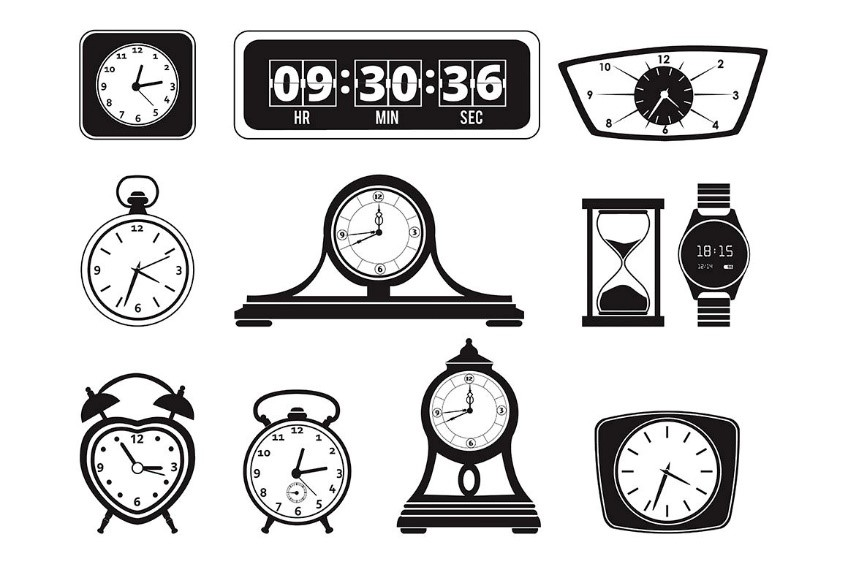

Chapter One: Decoding Cultures of Time-Based Media
Messing with Time
“While computers were used like wood, string, and electricity as material to mess about with, they evolved into something else…”
Seymour Papert.Computer as Material: Messing about Time (1988)
Background
Do you feel that time seems to be going by faster as you get older?
Can you remember a period in your life where time seemed to stretch on forever?
Time Perception is a scientific field exploring how the human perception of time is malleable, subjective, and changing based on circumstances and our psychological state. It is no surprise, that the perception of time is also a fundamental consideration for the design of digital interactions and experiences.
In this open-ended project, you are asked to create an time-based media piece which facilitates a novel experience for a user regarding the passage of time.
Instructions
As design and art jump into the digital domain, a variety of new media forms have emerged.
In this course, we explore some of these possibilities.
In this first phase, we will explore a different topic each week. They are:
- 02 Interactive Drawing Machine
- 03 Software Clocks
- 04 Web-Cam Filters
- 05 Generative Poetry
- 06 Music Visualizer
In this project, you will take
Requirements
- You must use JavaScript for at least part of project
- This is due in session 8, October 21st
Grading Criteria
30% of Final Grade
Note: You must use of third-party examples as a guideline only. It is easy to identify copy + pasted solutions - the highest mark possible in these cases is 50%. Seek out extra help if you are facing technical challenges.Late Policy: 1 minute late = 50% penalty